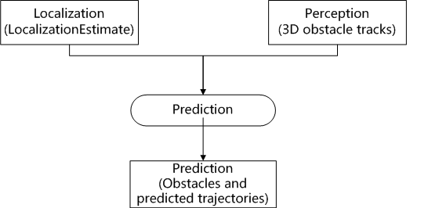

Prediction模块分析#
作用：#
预测障碍物的运动轨迹，每条轨迹都有一个概率值。
输入：#
- 车辆位置信息：/apollo/localization/pose（[pb_msgs/LocalizationEstimate]）。
- 障碍物信息：/apollo/perception/obstacles（[pb_msgs/PerceptionObstacles]）。
输出：#
障碍物的运动轨迹。/apollo/prediction[pb_msgs/PredictionObstacle]。
节点图：#

子模块：#
- 容器： 存储订阅话题中的数据。
- 评估器：对于任意一个障碍物，评估器预测路径和速度。一个评估器通过使用_prediction/data/_ 下的评估模型对每条路径给出一个概率值，实现评估。
- 预测器：预测器为障碍物预测通过，当前通道包含以下几种：
- 车道序列：障碍物只能依据车道移动。
- 自由移动：障碍物自由移动。
- 区域引动：障碍物只能在一定的区域移动。
源码架构：#
- main.cc: 启动/prediction节点。
- prediction.cc和prediction.h:
- Name()函数：返回节点名字prediction。
- Init()函数：
- 使用配置文件prediction_conf.pb.txt设置prediction_conf_，主要设置preditor的产生的通道类型。
- 使用配置文件adapter.conf设置adapter_conf_，设置节点话题类型。
- 初始化AdapterManager，定义nodehandle和话题。
- 初始化ContainerManager，每一个接受话题创建一个Container，用于接受话题数据。
- 初始化EvaluatorManager：注册一个Evaluator：MLP_EVALUATOR；根据prediction_conf.pb.txt配置MLP_EVALUATOR，似乎关注路上的车辆，设置vehicle_on_lane_evaluator_。
- 初始化PredictorManager：注册四个Predictor，并设置了vehicle_on_lane_predictor_，vehicle_off_lane_predictor_和pedestrian_predictor_。
- 检测localization和perception节点是否准备好。
- 设置localization和perception数据的回调函数OnLocalization和OnPerception。
- OnLocalization函数：
- 获取障碍物容器obstacles_container。
- 获取位置pose_container。
- 将新到的位置消息存入pose_container。
- 更新障碍物信息。
- OnPerception函数：
- 获取障碍物容器obstacles_container。
- 将新到的障碍物信息存入obstacles_container。
- 运行Evaluator。
- 运行Predictor。
- 跟新待发布数据prediction_obstacles header结构，发布消息。
评估器Evaluator:#
- 创建一个新的NewEvaluator：
- data/mlp_vehicle_model.bin：利用深度学习实现的评估器核心部分。
- feature.proto或lane_graph.proto文件的配置输出，不清楚作用。
- 在evaluator/vehicle/目录下，以Evaluator为基类实现一个新的评估器类NewEvaluator。并参考mlp_evaluator实现类。
- prediction_conf.pb.txt文件中指定所实现的新评估器类。
- evaluator_manager.h中修改默认使用的评估器类。
- evaluator_manager.cc中的Run()函数：
- 获取障碍物容器container。
- 遍历所有障碍物，利用障碍物id和障碍物容器获取障碍物信息obstacle。
- 针对lane上的障碍物，调用Evaluate进行评估。
- mlp_evaluator.cc中的Evaluate()函数：
- 以单个障碍物为参数。计算单个障碍物的feature，并计算其概率。
- 每个obstacle_ptr中包含多个lane_graph_ptr。
- 利用obstacle_ptr和lane_graph_ptr可计算出feature_values
- 由feature_values计算概率值probability。
- 将概率值probability设置到lane_sequence_ptr。
- 进一步的分析需要理解feature和lane_sequence概念，需要进入算法，暂时评估器到这里。
预测器Predictor：#
- 功能：预测障碍物的未来轨迹。
- 创建一个新的预测器NewPredictor：
- 在predictor/下新建目录vehicle。
- 在vehicle目录下创建new_predictor.h和new_predictor.cc，主要是继承与Predictor类定义并实现子类NewPredictor。具体实现可以参考vehicle同级目录free_move等。
- 更新配置文件prediction_conf.pb.txt，添加新预测器类型。
- 更新manager，在文件predictor_manager.h中修改默认预测器类型。
- prediction_manager.cc中的run()函数：
- 获取障碍物容器container。
- 设置预测障碍物的时间戳。
- 根据预测障碍物中的id和容器获取障碍物信息obstacle。
- 根据预测障碍物中的类型设置预测器的类型predictor。
- 传入障碍物信息，执行预测器predictor->Predict(obstacle)。
- 将障碍物的所有轨道配置到预测到的障碍物中。并更新时间戳。
- 预测器函数Predict()函数：
- 根据障碍物信息获取feature。
- 由feature获取num_lane_sequence。
- 遍历num_lane_sequence，通过feature获取sequence。
- 由sequence获取curr_lane_id。
- 由curr_lane_id通过DrawLaneSequenceTrajectoryPoints()函数获取TrajectoryPoint。
- 由TrajectoryPoint通过GenerateTrajectory()函数获取trajectory。
- 设置该trajectory的probability，存入trajectories_向量。
- 和Evaluator类似，进一步分析需了解具体算法，暂时到这里。